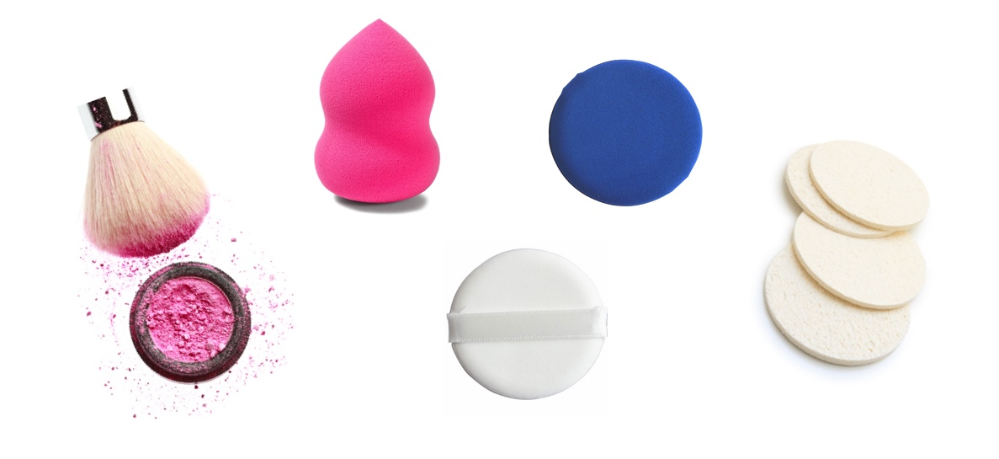

就算把脸洗得再干净，用的粉扑、刷子等不定时清洗管理的话，效果等于白费一场。直接碰触到我们脸上的化妆工具,只有经常清洗才不会刺激到我们敏感的皮肤。 残留在工具上的物质遇到空气发生酸化反应，会引发各种肌肤问题;并且在下次使用时不管是质感上还是色感上都达不到我们想要的效果。现在就让我公开几个清洁化妆工具的诀窍吧！
就算把脸洗得再干净，用的粉扑、刷子等不定时清洗管理的话，效果等于白费一场。直接碰触到我们脸上的化妆工具,只有经常清洗才不会刺激到我们敏感的皮肤。 残留在工具上的物质遇到空气发生酸化反应，会引发各种肌肤问题;并且在下次使用时不管是质感上还是色感上都达不到我们想要的效果。现在就让我公开几个清洁化妆工具的诀窍吧！

将中性清洁剂或者化妆刷专用清洁剂倒入水中，用刷子和出泡沫后反复冲洗，直到彻底洗净为止。用厨房用的过滤网轻柔化妆刷的话，会得到意想不到的效果。化妆刷专用清洁剂价格也很便宜，建议购买。 洗净后用吸水性较好的毛巾按一按，放在通风的地方阴干。此时注意不要将刷毛向上挂，向下挂才适宜。放在毛巾或者纸巾上阴干也可以。另外洗完之后建议用手将刷毛抓一抓，整理一下形状。如果刷毛被分叉晾干，碰触到脸上的感觉就不太舒适；色感也会变差。 唇妆&眼影刷上会有彩妆品残留物，所以用专业去眼妆/唇妆的卸妆油或者卸妆水清洗的话会更方便。清洗的时候注意油脂不要残留在刷毛上，尽量多冲洗；或者在每天使用前，将免洗卸妆产品(No Wash Cleaner) 倒在化妆绵上，轻轻地揉擦刷毛也可维持刷毛的清洁状态。
海绵粉扑经常清洗的话表面会变得粗糙，刺激肌肤。最好的方法是将使用过的部分用剪刀剪掉，使用干净的部分。不过弹性较好，而且比较坚硬的海绵粉扑还是可以清洗的。将海绵扑充分地泡在凉水后抹些卸妆油，用手轻柔并冲洗干净就可以。 用完海绵扑的四面之前不清洗也会成为一个大问题。根据保管位置，海绵扑表面上会出现点点状的霉菌，所以建议至少两天清洗一次或者剪掉用过的部分。 最近我们经常用的葫芦粉扑、水珠粉扑也都是海绵材质，沾水使用的情况多，容易引发很多卫生问题。这些也和海绵粉扑的清洗方法一样清理就好。
气垫粉扑的表面是深蓝色，我们用肉眼很难辨别它的清洁状态。并且粉底液渗透到了粉扑的内部，如果只将表面洗干净也是绝对不可以的。 。 洗面奶揉出泡沫后和粉扑一起放入保鲜袋里拉上，轻柔粉扑。洗面奶泡沫渗透到粉扑内部，使之留在里边的粉底液全部被挤出来。用有点重量的小东西轻按的话效果会更佳。然后用清水一直冲洗，直到粉底液完全被洗掉为止。最后将水分吸干，放到通风的地方阴干。


如果是油性皮肤,粉扑解除油份比较多，吸收油脂之后容易变得潮湿。因此汗和油脂多的季节要特别注意清洗，使粉扑保持干爽状态。 在温水中倒些清洁剂，弄出泡沫后轻柔粉扑，将残留物彻底洗干净。用吸水性好的毛巾轻按，把水分吸干后放在通风的地方阴干。比起地板或者桌子，把粉扑放在晾衣架上晾干是最好的。